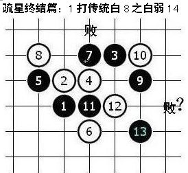
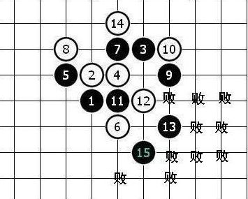

[互动棋谱]疏星弱14
首页
茗弈阁
#1 [互动棋谱]疏星弱14 作者：二十七刀 发表时间：2009-2-11 20:22:40
疏星弱14dl]下载 55555.rar下载
55555.rar下载［ 有志青年 于 2009-2-12 7:34:52 时奖励此帖[金币加 20 威望加1］
［此帖子已被 茗弈小刀 在 2009-4-22 19:54:56 编辑过］
#2 Re:疏星弱14 作者：山寨手机 发表时间：2009-2-11 21:08:09
顶一个
#3 Re:疏星弱14 作者：兔子哥哥 发表时间：2009-2-11 21:47:18
其实13活一个3就是了，14挡2边都一样输，我07年时候就拆出来了，嘿嘿！
#4 Re:疏星弱14 作者：弱小的无尾猫 发表时间：2009-2-12 8:34:35
顶！这个局面在应对实战时很有价值的!同时也充分体现了棋形与攻杀的紧密联系！有助于更深入的理解五子棋的棋理：）
#5 Re:疏星弱14 作者：茗弈小刀 发表时间：2009-2-12 13:24:31
感谢二十七刀哥哥与大家分享这个研究。
#6 Re:疏星弱14 作者：夏百萧 发表时间：2009-2-13 0:41:45
14挡两边全是输?汗